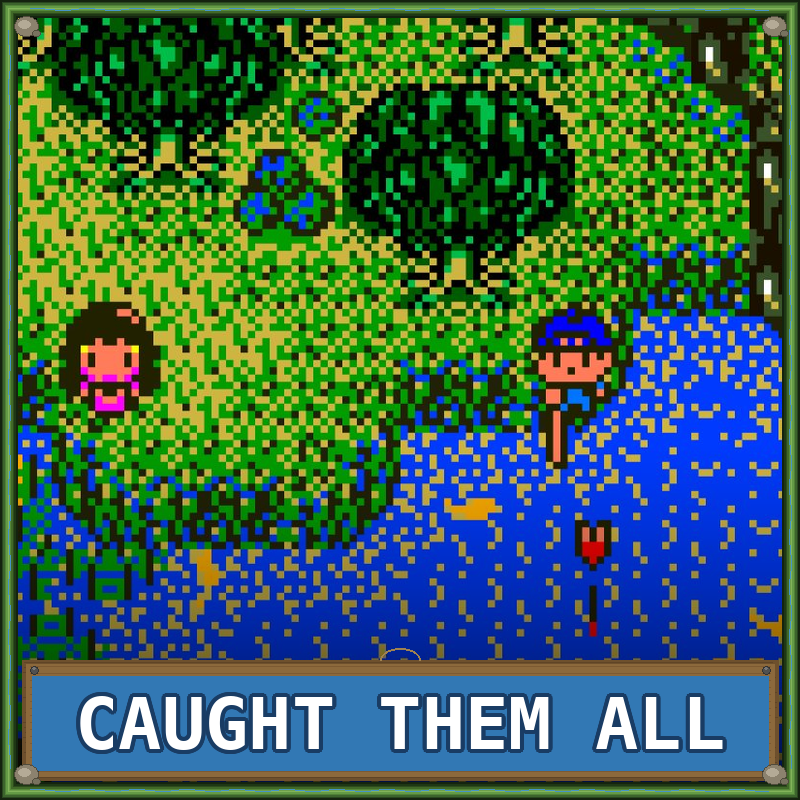
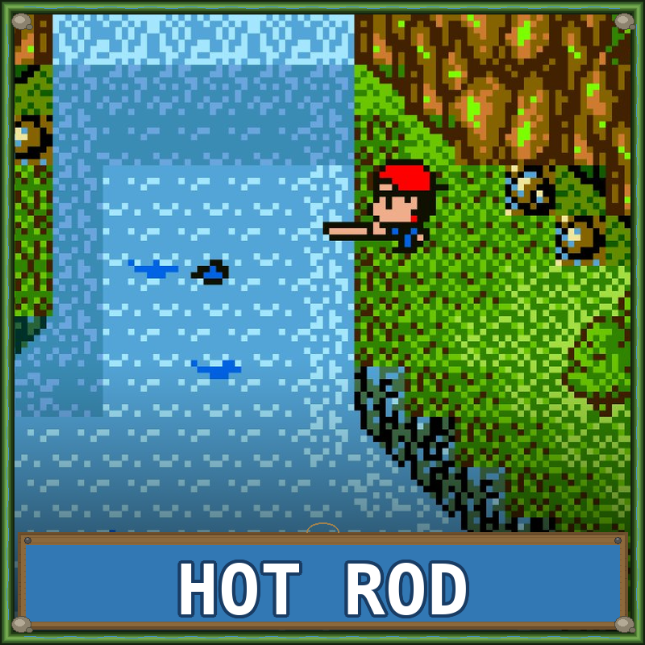
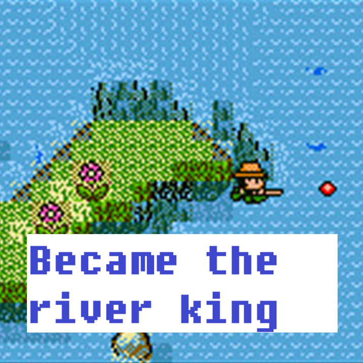

Legend of the River King
A charming fishing RPG that combines relaxing angling gameplay with adventure elements. Players explore various locations, catch fish, and help characters along the way. The game features day and night cycles, weather effects, and a variety of fish to discover. With its cozy atmosphere and addictive fishing mechanics, Legend of the River King offers a unique handheld experience that stands out among Game Boy Color titles.

| Platform | Game Boy Color |
|---|---|
| Genre | Fishing RPG |
| Released | |
| Developer | Natsume |
| Publisher | Natsume |
| Available | GBC |
Where to Play
About This Game
Legend of the River King was developed by Victor Interactive Software (published by Natsume in the West) and released for the Game Boy Color in 1999. Part of the long-running "Kawa no Nushi Tsuri" (River King) series that began on the Famicom in 1990, this entry blends fishing simulation with a JRPG-style overworld adventure. The premise is simple and heartfelt: your sister has fallen ill, and the only cure is to catch the legendary Guardian Fish. Getting there means traveling across diverse environments, battling wildlife, upgrading your gear, and mastering the art of angling.
The game arrived in the West during the Game Boy Color's peak years, competing for attention against Pokemon and Zelda but carving out its own quiet niche. Its combination of fishing mechanics, monster battling, and RPG exploration was unlike anything else on the handheld. In Japan, the River King series is a well-known franchise with over a dozen entries, but Western releases have been sporadic—making this Game Boy Color version one of the most accessible entry points for English-speaking players. It's a cozy, meditative game that rewards patience and exploration, perfectly suited for handheld play.
Did You Know?
- Part of a long-running Japanese series — Legend of the River King is part of the "Kawa no Nushi Tsuri" franchise that began on the Famicom in 1990. The series has over a dozen entries in Japan, but only a handful were ever localized for Western audiences.
- Fishing meets monster battling — While exploring the overworld, players encounter hostile wildlife like bears, snakes, and birds. Combat uses a simple turn-based system where you fight with fishing-related equipment, making it one of the few RPGs where your weapon of choice is a fishing rod.
- Day-night and weather systems — The game features a real-time clock that affects which fish appear and how they behave. Certain rare fish only appear during specific weather conditions or times of day, encouraging patient and methodical play.
- The Guardian Fish myth — The game's central quest to catch a legendary Guardian Fish to cure your sister's illness draws from Japanese folklore about "nushi" — ancient, enormous fish spirits said to inhabit rivers and lakes as their guardians.
Critical Reception
Accolades
- Hidden Gem Frequently cited as one of the GBC's most underrated titles — Retro Gamer, 2015
- Niche Classic Recognized as a standout in the fishing game genre on handheld — Nintendo Life, 2020
- Cozy Game Pioneer Cited as an early example of the "cozy game" genre before the term existed — Game Informer, 2019
Club Achievements

Catch All 45 Fish
Gold
Get All Rods
Silver
Beat the Game
BronzeBonus Goal
How many fish can you get the BIG stamp for?
No submissions yet.
Other Participants
No other participants yet.
Speedrun Records
Legend of the River King is an extremely niche speedrun title with a small but dedicated community. Runs focus on reaching the Guardian Fish as quickly as possible, skipping optional fish and minimizing RPG encounters.
Soundtrack
Composed by Tsukasa Masuko
The Game Boy Color's limited sound channels are put to charming use here — gentle, looping melodies that evoke lazy afternoons by the river. Each area has its own distinct theme, from cheerful town tunes to the tranquil ambience of fishing spots. The music perfectly complements the game's relaxing pace.
Notable Tracks
- Title Theme
- River Fishing
- Town Theme
- Mountain Stream
- Battle Theme
- Guardian Fish
Sources & Attribution
- Game description and historical background adapted from Wikipedia
- Trivia sourced from Giant Bomb and community research
- Review scores from IGN, Nintendo Power, and GameSpot
- Accolades from Retro Gamer, Nintendo Life, and Game Informer
- Speedrun data from Speedrun.com
- Playtime estimates from HowLongToBeat
- Screenshots and box art via LaunchBox Games Database
- Soundtrack information from KHInsider
- Pricing data from PriceCharting